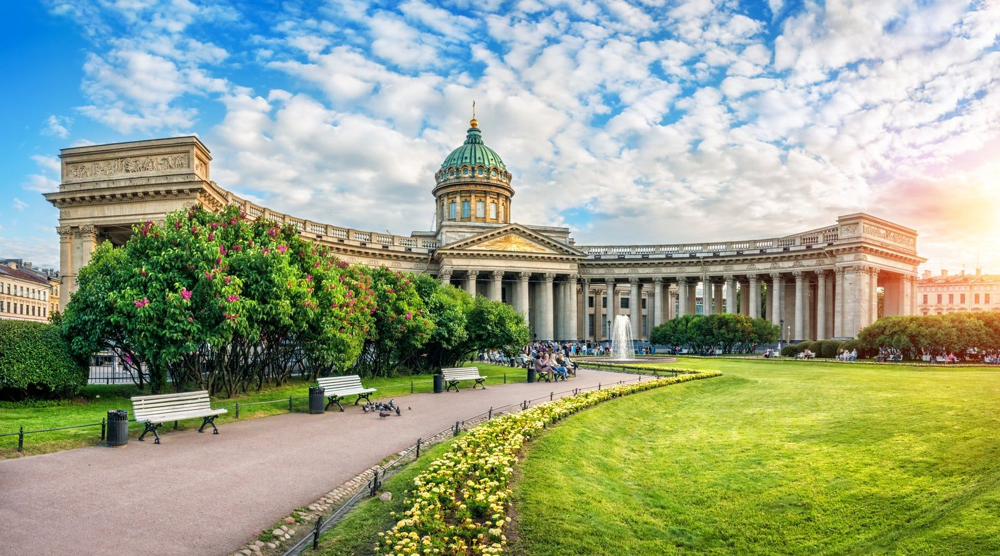

Санкт-Петербург — признанный культурный центр России. Город славится своими мировыми музеями, такими как Эрмитаж и Русский музей, знаменитыми театрами, включая Мариинский и Александринский, а также богатыми литературными традициями, связанными с именами Пушкина, Достоевского и Гоголя. Белые ночи, разводные мосты и уникальная архитектура создают неповторимую атмосферу, привлекающую художников, музыкантов и ценителей искусства со всего мира.


Знаете ли вы?
В прошлом город носил названия «Петроград» и «Ленинград»!
В прошлом город носил названия «Петроград» и «Ленинград»!